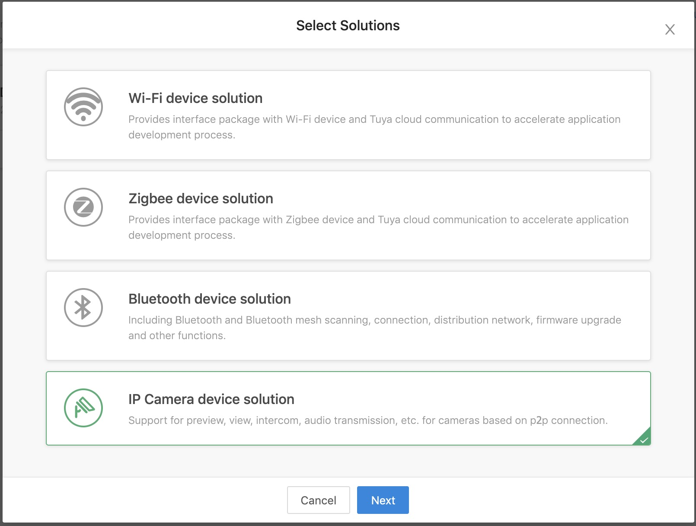

Integrated SDK
Solutions introduction
Before integrate Tuya smart camera SDK, please learn about Tuya Smart iOS SDK.
The Tuya Open Platform provides various integrate modes based on Tuya's mature IoT services, refer to Solutions Introduction.
Mini SDK
Based on the partner own App, embed in Tuya's mini sdk (only includes the distribution network package: ssid, password and user token obtained from the cloud). Device status changes can't be pushed to the App directly, the pushing ability to rely on the partner's own cloud.
However, since the camera cannot be controlled using open api, the Mini SDK solution still needs to integrate the camera SDK.
You can use the open api provided by Tuya Cloud to develop user management, cloud storage, alarm detection, and functions based on data points. Use Tuya smart camera SDK to develop the basic functions of camera like live video.
Modules
| Module | Description |
|---|---|
| TuyaSmartActivator | Device network configuration for Mini SDK solution |
| TuyaSmartCameraKit | Tuya smart camera business core kit |
Add the following content in the Podfile file.
platform :ios, '9.0'
target 'your_target_name' do
pod "TuyaSmartActivator"
pod "TuyaSmartCameraKit"
# pod "TuyaSmartCameraT"
end
Full SDK
The App is based entirely on the full version of the Tuya SDK, which can take full advantage of the various capabilities provided by the Tuya SDK, such as: distribution network, device control, home management, scene management, upgrade management, etc. and reduce the difficulty of App development.
Modules
| Module | Description |
|---|---|
| TuyaSmartActivatorKit | Device network configuration for Full SDK solution |
| TuyaSmartCameraKit | Tuya smart camera business core kit |
Mini SDK is use
TuyaSmartActivatorto configure network for device, but Full SDK isTuyaSmartActivatorKit. These two modules cannot be dependent at the same time, which will cause compilation conflicts.
TuyaSmartCameraKitis not a separate library, refer to SDK Architecture.
Add the following content in the Podfile file.
platform :ios, '9.0'
target 'your_target_name' do
pod "TuyaSmartActivatorKit"
pod "TuyaSmartCameraKit"
# pod "TuyaSmartCameraT"
end
If your App need to support p2p 1.0, need to add pod "TuyaSmartCameraT".
Then run the pod update command in the root directory of project. For use of CocoaPods, please refer to the CocoaPods Guides. It is recommended to update the CocoaPods to the latest version.
Preparation work
Before starting to develop with the SDK, you need to register a developer account, create a product, etc. on the Tuya Smart Development Platform, and obtain a key to activate the SDK. Refer to Preparation work.
Please select IP Camera device solution when obtain SDK.

Initialize SDK
Open project setting,
Target => General, editBundle Identifierto the value from Tuya develop center.Import security image to the project and rename as
t_s.bmp, then add it intoProject Setting => Target => Build Phases => Copy Bundle Resources.Add the following to the project file
PrefixHeader.pch, Swift project add the following to thexxx_Bridging-Header.hfile:#import <TuyaSmartBaseKit/TuyaSmartBaseKit.h> #import <TuyaSmartActivatorKit/TuyaSmartActivatorKit.h> #import <TuyaSmartCameraKit/TuyaSmartCameraKit.h>Open file
AppDelegate.m，and use theApp KeyandApp Secretobtained from the development platform in the[AppDelegate application:didFinishLaunchingWithOptions:]method to initialize SDK:ObjC
[[TuyaSmartSDK sharedInstance] startWithAppKey:<#your_app_key#> secretKey:<#your_secret_key#>];Swift
TuyaSmartSDK.sharedInstance()?.start(withAppKey: <#your_app_key#>, secretKey: <#your_secret_key#>)
Now all the prepare work has been completed. You can use the sdk to develop your application now.
Debug Mode
During the development we can open debug mode, print the log to analyze some problem.
ObjC
#ifdef DEBUG
[[TuyaSmartSDK sharedInstance] setDebugMode:YES];
#else
#endif
Swift
#if DEBUG
TuyaSmartSDK.sharedInstance()?.debugMode = true
#else
#endif